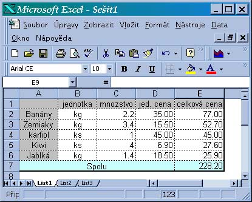

Používanie vzorcov robí z excelu silný nástroj na spracovanie tabuliek. Veľkou výhodou je, že ak zmeníme hodnotu niektorej bunky
alebo pridáme/odoberieme bunky sú všetky vzorce prepočítané a teda výsledky výpočtu každého vzorca sú stále aktuálne.
Pomocou vzorcov a riešiteľa (nástroj, ktorý excel obsahuje) možno riešiť aj niektoré rovnice, optimalizácie atď.
V tejto časti sa budeme venovať písaniu vzorcov bez používania zabudovaných funkcií.
Opakovanie
Načo je podmienené formátovanie
Ktoré vlastnosti bunky možno nastaviť podľa podmienky
Ako zadáme podmienku podľa ktorej sa format mení
Koľko podmienok môžme zadať
Co sa stane, keď vyhovie viac podmienok
Čo sa stane ak žiadna podmienka nevyhovie
Písanie jednoduchých vzorcov - bez použitia funkcií
Vzorce začínajú znakom = , ktorý je umiestnený
aj hneď vedľa vstupného riadka a možno ho aktivovať myšou. Ak = zabudneme dať možno ho pridať aj dodatočne.
Za znakom = musí byť umiestnený výraz buď:
aritmetický - výsledkom je číslo - a2+5
logický - výsledkom je pravda alebo nepravda - a1>a2
textový - výsledkom je text - b5 & " výrobkov"
dátumový - výsledkom je dátum
časový - výsledkom je čas
Operátory
Aritmetické operátory Povolené operátory sú:
+ ... súčet
- ... rozdiel
* ... súčin
/ ... podiel
^ ... mocnina
% ... percentá (vynásobí výsledok 100-mi)
Dátumové operátory Povolené sú všetky aritmetické operáry (dátum je v exceli zapísaný ako číslo) ale praktický význam má
+ ... pripočíta ku dátumu niekoľko dní
- ... odpočíta od dátumu iný dátum a získame počet dní, alebo odpočíta od dátumu niekoľko dní a získa posunutý dátum
Časové operátory Povolené sú všetky aritmetické operáry (čas je v exceli zapísaný ako číslo) ale praktický význam má
+ ... pripočíta ku času na hodinách niekoľko sekúnd a získa nový čas na hodinách
- ... odpočíta od času iný čas a získame počet sekúnd, alebo odpočíta od času niekoľko seknd a získa posunutý čas
Textové operátory Je iba jeden:
& ... spojenie dvoch textov do jedného ("bledo" & "modrý" -> bledomodrý
Relačné operátory > ... väčší
< ... menší
= ... rovný
>= ... väčší alebo rovný
<= ... menší alebo rovný
<> ... rôzny
Výrazy
Vo výrazoch sa môžu vyskytovať aj adresy buniek.
Napr. do bunky B2 zapíšeme nasledujúci vzorec =a2^3-2*a2^2-a2+3,
keď teraz budeme do A2 zadávať čísla, tak v bunke sa vždy ukáže hodnota polynomu y=x^3-2*x^2-x+3.
Zadajme teraz do bunky C2 vzorec =B2/4. Každou zmenou hodnoty bunky A1 sa zmení hodnota bunky B2
a to zas vyvolá zmenu bunky C2.
Kopírovanie vzorcov, absolútne a relatívne adresovanie
Pri kopírovaní vzorcov si všimneme, že adresy buniek v nich uvedené sa kopírovaním zmenia.
Ak presúvam-kopírujem vzorec o n stĺpcov a m riadkov adresy vo vzorci sa zmenia o n-stĺpcov a m-riadkov.
V tabuľke nákupu zeleniny sú v stĺpci E použité vzorce (v E2 je =c2*d2), stačí ten vzorec napísať raz
je rovnaký pre pre všetky riadky tabuľky
 Obr.2
Vďaka tomu, že sa vzorec pri kopírovaní mení stačí ho urobiť raz napr. v E2 a potom nakopírovať
do ostatných buniek stĺpca E. Takéto adresovanie voláme relatívne.
Ak potrebujeme aby sa niektorá adresa vo vzorci pri kopírovaní nemenila môžeme ju "uzamknúť" pomocou
znakov dolar ($). Uzamknúť možno jak stĺpec, riadok i oboje. Takúto adresu voláme absolútnou a vyzerá
napr. takto: $A$5, C$5, $AA1
Príklad:
A
B
C
1
Meno
Plat
NovyPlat
2
Daniš
8500
?
3
Frano
7200
?
4
Gábor
7800
?
5
Maco
6900
?
6
Rak
8800
?
G
Percento rastu
18
Do bunky C2 zapíšeme vzorec =B2*(1+$G$2/100) a takýto vzorec je možné kopírovať do ďalších buniek
stĺpca C.